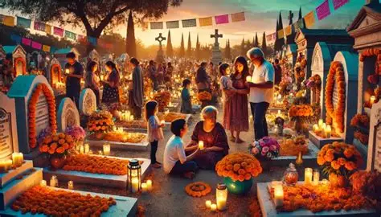

¿Que es el dia de muertos? El dia de muertos es una festividad mexicana que se celebra principalmente el 1 y 2 de noviembre de cada año. es una celebración que combina elementos de las creencias prehispánicas y católicas, donde se honra a los difuntos a través de altares, ofrendas y visitas a cementerios.
4.-¿Cual es la historia y el origen del "Dia de Muertos"?
El Día de los Muertos es una de las tradiciones culturales más representativas de México, reconocida a nivel mundial por su riqueza simbólica, estética y espiritual. Lejos de ser una simple conmemoración, esta celebración constituye un puente entre el pasado prehispánico y el presente, donde conviven creencias ancestrales, rituales indígenas y elementos introducidos durante la colonización española.
En sus formas actuales, el Día de los Muertos se celebra principalmente los días 1 y 2 de noviembre. Sin embargo, su origen se remonta a miles de años atrás, cuando diversas civilizaciones mesoamericanas desarrollaron complejas concepciones sobre la vida, la muerte y el más allá. Comprender esta festividad implica analizar sus raíces históricas, su evolución cultural y su profundo significado social.
.webp)
